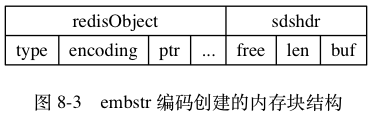

字符串对象¶
字符串对象的编码可以是 int 、 raw 或者 embstr 。
如果一个字符串对象保存的是整数值，
并且这个整数值可以用 long 类型来表示，
那么字符串对象会将整数值保存在字符串对象结构的 ptr 属性里面（将 void* 转换成 long ），
并将字符串对象的编码设置为 int 。
举个例子，
如果我们执行以下 SET 命令，
那么服务器将创建一个如图 8-1 所示的 int 编码的字符串对象作为 number 键的值：
redis> SET number 10086
OK
redis> OBJECT ENCODING number
"int"
![digraph {
label = "\n 图 8-1 int 编码的字符串对象";
rankdir = LR;
node [shape = record];
redisObject [label = " redisObject | type \n REDIS_STRING | encoding \n REDIS_ENCODING_INT | <ptr> ptr | ... "];
node [shape = plaintext];
number [label = "10086"]
redisObject:ptr -> number;
}](../../_images/graphviz-c0ba08ec03934562687cc3cb79580e76edef81e3.png)
如果字符串对象保存的是一个字符串值，
并且这个字符串值的长度大于 39 字节，
那么字符串对象将使用一个简单动态字符串（SDS）来保存这个字符串值，
并将对象的编码设置为 raw 。
举个例子，
如果我们执行以下命令，
那么服务器将创建一个如图 8-2 所示的 raw 编码的字符串对象作为 story 键的值：
redis> SET story "Long, long, long ago there lived a king ..."
OK
redis> STRLEN story
(integer) 43
redis> OBJECT ENCODING story
"raw"
![digraph {
label = "\n 图 8-2 raw 编码的字符串对象";
rankdir = LR;
node [shape = record];
redisObject [label = " redisObject | type \n REDIS_STRING | encoding \n REDIS_ENCODING_RAW | <ptr> ptr | ... "];
sdshdr [label = " <head> sdshdr | free \n 0 | len \n 43 | <buf> buf"];
buf [label = " { 'L' | 'o' | 'n' | 'g' | ... | 'k' | 'i' | 'n' | 'g' | ' ' | '.' | '.' | '.' | '\\0' } " ];
//
redisObject:ptr -> sdshdr:head;
sdshdr:buf -> buf;
}](../../_images/graphviz-8731210637d0567af28d3a9d4089d5f864d29950.png)
如果字符串对象保存的是一个字符串值，
并且这个字符串值的长度小于等于 39 字节，
那么字符串对象将使用 embstr 编码的方式来保存这个字符串值。
embstr 编码是专门用于保存短字符串的一种优化编码方式，
这种编码和 raw 编码一样，
都使用 redisObject 结构和 sdshdr 结构来表示字符串对象，
但 raw 编码会调用两次内存分配函数来分别创建 redisObject 结构和 sdshdr 结构，
而 embstr 编码则通过调用一次内存分配函数来分配一块连续的空间，
空间中依次包含 redisObject 和 sdshdr 两个结构，
如图 8-3 所示。

embstr 编码的字符串对象在执行命令时，
产生的效果和 raw 编码的字符串对象执行命令时产生的效果是相同的，
但使用 embstr 编码的字符串对象来保存短字符串值有以下好处：
embstr编码将创建字符串对象所需的内存分配次数从raw编码的两次降低为一次。- 释放
embstr编码的字符串对象只需要调用一次内存释放函数， 而释放raw编码的字符串对象需要调用两次内存释放函数。 - 因为
embstr编码的字符串对象的所有数据都保存在一块连续的内存里面， 所以这种编码的字符串对象比起raw编码的字符串对象能够更好地利用缓存带来的优势。
作为例子，
以下命令创建了一个 embstr 编码的字符串对象作为 msg 键的值，
值对象的样子如图 8-4 所示：
redis> SET msg "hello"
OK
redis> OBJECT ENCODING msg
"embstr"
![digraph {
label = "\n 图 8-4 embstr 编码的字符串对象";
node [shape = record];
embstr [ label = " { redisObject | { type \n REDIS_STRING | encoding \n REDIS_ENCODING_EMBSTR | <ptr> ptr | ... } } | { sdshdr | { free \n 0 | len \n 5 | { buf | { <buf> 'h' | 'e' | 'l' | 'l' | 'o' | '\\0'}} }} " ];
embstr:ptr -> embstr:buf;
}](../../_images/graphviz-900c13b23ce79372939259603be936c955ccaa62.png)
最后要说的是，
可以用 long double 类型表示的浮点数在 Redis 中也是作为字符串值来保存的：
如果我们要保存一个浮点数到字符串对象里面，
那么程序会先将这个浮点数转换成字符串值，
然后再保存起转换所得的字符串值。
举个例子，
执行以下代码将创建一个包含 3.14 的字符串表示 "3.14" 的字符串对象：
redis> SET pi 3.14
OK
redis> OBJECT ENCODING pi
"embstr"
在有需要的时候， 程序会将保存在字符串对象里面的字符串值转换回浮点数值， 执行某些操作， 然后再将执行操作所得的浮点数值转换回字符串值， 并继续保存在字符串对象里面。
举个例子， 如果我们执行以下代码的话：
redis> INCRBYFLOAT pi 2.0
"5.14"
redis> OBJECT ENCODING pi
"embstr"
那么程序首先会取出字符串对象里面保存的字符串值 "3.14" ，
将它转换回浮点数值 3.14 ，
然后把 3.14 和 2.0 相加得出的值 5.14 转换成字符串 "5.14" ，
并将这个 "5.14" 保存到字符串对象里面。
表 8-6 总结并列出了字符串对象保存各种不同类型的值所使用的编码方式。
表 8-6 字符串对象保存各类型值的编码方式
| 值 | 编码 |
|---|---|
可以用 long 类型保存的整数。 |
int |
可以用 long double 类型保存的浮点数。 |
embstr 或者 raw |
字符串值，
或者因为长度太大而没办法用 long 类型表示的整数，
又或者因为长度太大而没办法用 long double 类型表示的浮点数。 |
embstr 或者 raw |
编码的转换¶
int 编码的字符串对象和 embstr 编码的字符串对象在条件满足的情况下，
会被转换为 raw 编码的字符串对象。
对于 int 编码的字符串对象来说，
如果我们向对象执行了一些命令，
使得这个对象保存的不再是整数值，
而是一个字符串值，
那么字符串对象的编码将从 int 变为 raw 。
在下面的示例中，
我们通过 APPEND 命令，
向一个保存整数值的字符串对象追加了一个字符串值，
因为追加操作只能对字符串值执行，
所以程序会先将之前保存的整数值 10086 转换为字符串值 "10086" ，
然后再执行追加操作，
操作的执行结果就是一个 raw 编码的、保存了字符串值的字符串对象：
redis> SET number 10086
OK
redis> OBJECT ENCODING number
"int"
redis> APPEND number " is a good number!"
(integer) 23
redis> GET number
"10086 is a good number!"
redis> OBJECT ENCODING number
"raw"
另外，
因为 Redis 没有为 embstr 编码的字符串对象编写任何相应的修改程序
（只有 int 编码的字符串对象和 raw 编码的字符串对象有这些程序），
所以 embstr 编码的字符串对象实际上是只读的：
当我们对 embstr 编码的字符串对象执行任何修改命令时，
程序会先将对象的编码从 embstr 转换成 raw ，
然后再执行修改命令；
因为这个原因，
embstr 编码的字符串对象在执行修改命令之后，
总会变成一个 raw 编码的字符串对象。
以下代码展示了一个 embstr 编码的字符串对象在执行 APPEND 命令之后，
对象的编码从 embstr 变为 raw 的例子：
redis> SET msg "hello world"
OK
redis> OBJECT ENCODING msg
"embstr"
redis> APPEND msg " again!"
(integer) 18
redis> OBJECT ENCODING msg
"raw"
字符串命令的实现¶
因为字符串键的值为字符串对象， 所以用于字符串键的所有命令都是针对字符串对象来构建的， 表 8-7 列举了其中一部分字符串命令， 以及这些命令在不同编码的字符串对象下的实现方法。
表 8-7 字符串命令的实现
| 命令 | int 编码的实现方法 |
embstr 编码的实现方法 |
raw 编码的实现方法 |
|---|---|---|---|
| SET | 使用 int 编码保存值。 |
使用 embstr 编码保存值。 |
使用 raw 编码保存值。 |
| GET | 拷贝对象所保存的整数值， 将这个拷贝转换成字符串值， 然后向客户端返回这个字符串值。 | 直接向客户端返回字符串值。 | 直接向客户端返回字符串值。 |
| APPEND | 将对象转换成 raw 编码，
然后按 raw
编码的方式执行此操作。 |
将对象转换成 raw 编码，
然后按 raw
编码的方式执行此操作。 |
调用 sdscatlen 函数，
将给定字符串追加到现有字符串的末尾。 |
| INCRBYFLOAT | 取出整数值并将其转换成
long double 类型的浮点数，
对这个浮点数进行加法计算，
然后将得出的浮点数结果保存起来。 |
取出字符串值并尝试将其转换成
long double 类型的浮点数，
对这个浮点数进行加法计算，
然后将得出的浮点数结果保存起来。
如果字符串值不能被转换成浮点数，
那么向客户端返回一个错误。 |
取出字符串值并尝试将其转换成
long double 类型的浮点数，
对这个浮点数进行加法计算，
然后将得出的浮点数结果保存起来。
如果字符串值不能被转换成浮点数，
那么向客户端返回一个错误。 |
| INCRBY | 对整数值进行加法计算， 得出的计算结果会作为整数被保存起来。 | embstr 编码不能执行此命令，
向客户端返回一个错误。 |
raw 编码不能执行此命令，
向客户端返回一个错误。 |
| DECRBY | 对整数值进行减法计算， 得出的计算结果会作为整数被保存起来。 | embstr 编码不能执行此命令，
向客户端返回一个错误。 |
raw 编码不能执行此命令，
向客户端返回一个错误。 |
| STRLEN | 拷贝对象所保存的整数值， 将这个拷贝转换成字符串值， 计算并返回这个字符串值的长度。 | 调用 sdslen 函数，
返回字符串的长度。 |
调用 sdslen 函数，
返回字符串的长度。 |
| SETRANGE | 将对象转换成 raw 编码，
然后按 raw
编码的方式执行此命令。 |
将对象转换成 raw 编码，
然后按 raw
编码的方式执行此命令。 |
将字符串特定索引上的值设置为给定的字符。 |
| GETRANGE | 拷贝对象所保存的整数值， 将这个拷贝转换成字符串值， 然后取出并返回字符串指定索引上的字符。 | 直接取出并返回字符串指定索引上的字符。 | 直接取出并返回字符串指定索引上的字符。 |